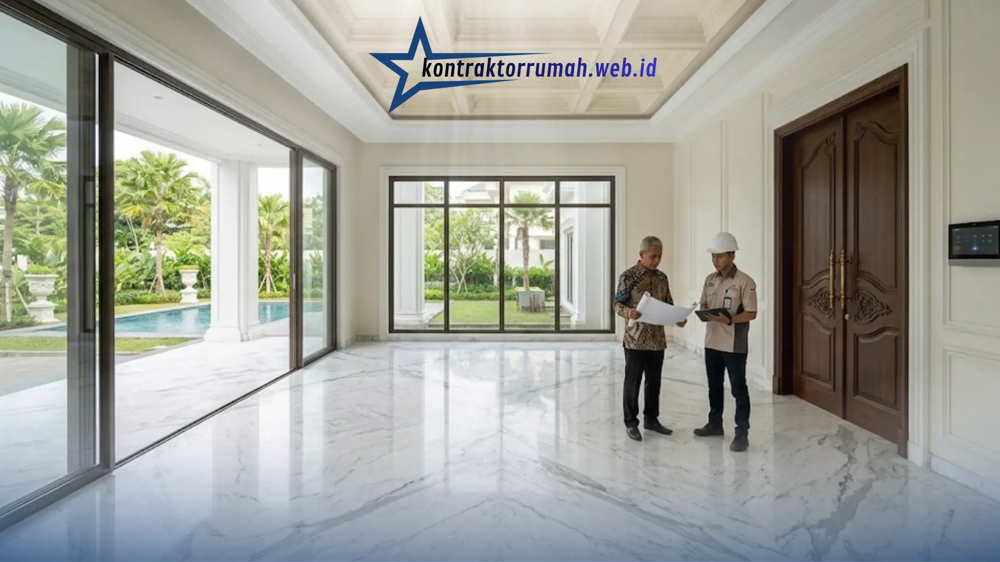

Rumah mewah berkelas premium wajib ditopang oleh struktur pondasi tiang pancang kokoh, beton mutu K-300 ke atas, finishing lantai marmer slab utuh (Italy/Turki), kusen kayu jati grade A atau aluminium premium (seperti YKK AP/Fenetra), serta instalasi kelistrikan pintar (smart home system). Kelima elemen ini bukan sekadar preferensi estetika, melainkan penentu utama yang membedakan rumah tinggal biasa dari hunian mewah berstandar arsitektur klasik yang tahan puluhan tahun. Artikel ini membahas secara rinci mengapa pemilihan material di setiap lapisan konstruksi — dari fondasi hingga finishing — menentukan kualitas, daya tahan, dan nilai investasi jangka panjang sebuah rumah premium.
Poin Penting
- Fondasi rumah mewah 2 lantai ke atas idealnya memakai tiang pancang/bore pile berdasarkan uji sondir tanah, bukan estimasi kasar.
- Mutu beton struktur ideal K-300 hingga K-350, jauh di atas K-225 yang lazim dipakai rumah standar.
- Lantai marmer slab utuh import (Italy/Turki) memberi urat batu alami menyambung tanpa putus, berbeda dari marmer tempel tipis.
- Kusen kayu jati grade A atau aluminium premium (YKK AP/Fenetra) tahan rayap, pelapukan, dan mampu menopang kaca berukuran besar.
- Rumah mewah premium dengan material terukur diperkirakan tahan 25–50 tahun dibanding 8–15 tahun rumah standar.
Sebagai arsitek dan kontraktor yang telah menangani puluhan proyek hunian kelas atas, kami memahami bahwa “mewah” bukan hanya soal tampilan visual, tetapi soal keputusan teknis yang diambil sejak tahap perencanaan struktur. Rumah dengan tampilan megah namun menggunakan material di bawah standar akan menunjukkan tanda kerusakan dalam hitungan tahun — retak rambut pada dinding, marmer tempel yang mengelupas, atau kusen aluminium tipis yang melengkung akibat beban kaca besar. Sebaliknya, rumah mewah sejati dibangun di atas spesifikasi teknis yang terukur dan terdokumentasi.
Matriks Perbandingan Material Konstruksi Standar vs Premium Mewah
Berikut gambaran umum perbedaan spesifikasi antara proyek rumah standar dan proyek rumah mewah berkelas premium, sebelum masuk ke pembahasan detail per kategori material:
| Elemen Konstruksi | Rumah Standar | Rumah Mewah Premium |
|---|---|---|
| Pondasi | Pondasi batu kali / cakar ayam dangkal | Tiang pancang / bore pile dengan kalkulasi daya dukung tanah |
| Mutu Beton | K-225 – K-250 | K-300 – K-350 ke atas |
| Lantai | Keramik granit tile 60x60 cm | Marmer slab utuh import (Italy/Turki) |
| Kusen & Jendela | Aluminium standar / kayu kamper | Kayu jati grade A atau aluminium premium (YKK AP, Fenetra) |
| Cat Eksterior | Cat tembok akrilik biasa | Cat silikon elastis self-cleaning tahan cuaca ekstrem |
| Sistem Kelistrikan | Instalasi manual konvensional | Smart home system terintegrasi |
| Estimasi Daya Tahan | 8–15 tahun sebelum renovasi besar | 25–50 tahun dengan perawatan berkala |
Tabel ini menegaskan bahwa selisih biaya material premium sejatinya adalah investasi terhadap daya tahan dan nilai jual kembali properti, bukan sekadar pengeluaran kosmetik semata.
Detail Spesifikasi Material Struktur dan Arsitektural Kelas Atas
1. Struktur Pondasi dan Beton Bertulang Mutu Tinggi (K-350)
Fondasi rumah mewah, terutama yang dibangun dua lantai ke atas dengan basement atau kolam renang, memerlukan sistem tiang pancang (pile foundation) atau bore pile yang dihitung berdasarkan hasil uji sondir tanah, bukan estimasi kasar. Beton bertulang yang digunakan pada struktur kolom, balok, dan pelat lantai idealnya bermutu K-300 hingga K-350, jauh di atas mutu K-225 yang lazim dipakai rumah standar. Mutu beton yang lebih tinggi memberikan ketahanan lebih besar terhadap beban statis maupun dinamis, termasuk potensi gempa, serta memperlambat proses karbonasi yang menyebabkan korosi tulangan besi dalam jangka panjang. Detail penulangan (diameter besi, jarak sengkang) juga harus mengacu pada perhitungan struktur oleh insinyur sipil bersertifikat, bukan rule of thumb tukang.
2. Finishing Marmer Import dan Kusen Kayu Solid Anti Rayap
Lantai marmer slab utuh — berbeda dari marmer tempel tipis (marble tile) — memberikan tampilan urat batu alami yang menyambung tanpa putus antar lempengan, ciri khas rumah klasik mewah di kawasan elite. Marmer import asal Italia (seperti Carrara, Calacatta) atau Turki dipilih karena keseragaman warna dan ketahanan terhadap goresan yang jauh lebih baik dibanding marmer lokal kelas menengah. Pada elemen kusen dan jendela, kayu jati grade A dengan serat rapat dan kadar minyak alami tinggi dipilih karena ketahanannya terhadap rayap dan pelapukan tanpa perlu treatment kimia berlebihan. Sebagai alternatif modern, aluminium premium seperti YKK AP atau Fenetra menawarkan profil yang lebih tipis namun kuat menopang kaca berukuran besar (glass curtain wall), cocok untuk desain rumah mewah bergaya kontemporer maupun klasik yang mengutamakan pencahayaan alami.

Lantai marmer slab utuh import memberi urat batu alami yang menyambung tanpa putus antar lempengan.
3. Cat Eksterior Tahan Cuaca Ekstrem dan Sistem Smart Home
Cat eksterior rumah mewah umumnya menggunakan formula silikon elastis (elastomeric silicone) dengan sifat self-cleaning, yang memungkinkan permukaan dinding “membersihkan diri” dari debu dan noda saat terkena air hujan, serta tahan retak akibat pemuaian-penyusutan material di bawahnya. Formula ini jauh lebih tahan terhadap sinar UV dan kelembapan tropis dibandingkan cat akrilik biasa yang cenderung kusam dan mengapur dalam 3-5 tahun. Di sisi lain, sistem smart home terintegrasi — mencakup kontrol pencahayaan, keamanan (CCTV, access control), tata udara, hingga otomasi tirai — kini menjadi standar baku hunian premium, memberikan efisiensi energi sekaligus kenyamanan operasional yang tidak dimiliki instalasi kelistrikan konvensional.
Mewujudkan Rumah Impian Premium Bersama Kontraktor Rumah Terpercaya
Membangun rumah mewah berstandar tinggi membutuhkan lebih dari sekadar anggaran besar — dibutuhkan tim arsitek dan kontraktor yang memahami detail teknis material premium sekaligus karakter arsitektur klasik yang diinginkan pemilik. Kontraktor Rumah memiliki tim sipil khusus yang berpengalaman menangani proyek-proyek prestisius di kawasan perumahan elite Jabodetabek, termasuk Pondok Indah, Menteng, dan Pantai Indah Kapuk, di mana standar material dan presisi eksekusi menjadi mutlak, bukan opsional.
Setiap proyek rumah mewah yang kami tangani dimulai dari kalkulasi struktur yang akurat, pemilihan material premium yang teruji, hingga pengawasan kualitas berlapis di setiap tahap pengerjaan — memastikan hasil akhir yang tidak hanya megah secara visual, tetapi juga kokoh dan bernilai investasi jangka panjang.
FAQ Seputar Material Premium Rumah Mewah
Memilih material premium bukan soal gengsi semata, melainkan keputusan investasi jangka panjang. Pastikan setiap lapisan konstruksi rumah mewah Anda — dari fondasi hingga finishing — dikerjakan tim yang memahami spesifikasi teknisnya secara menyeluruh.